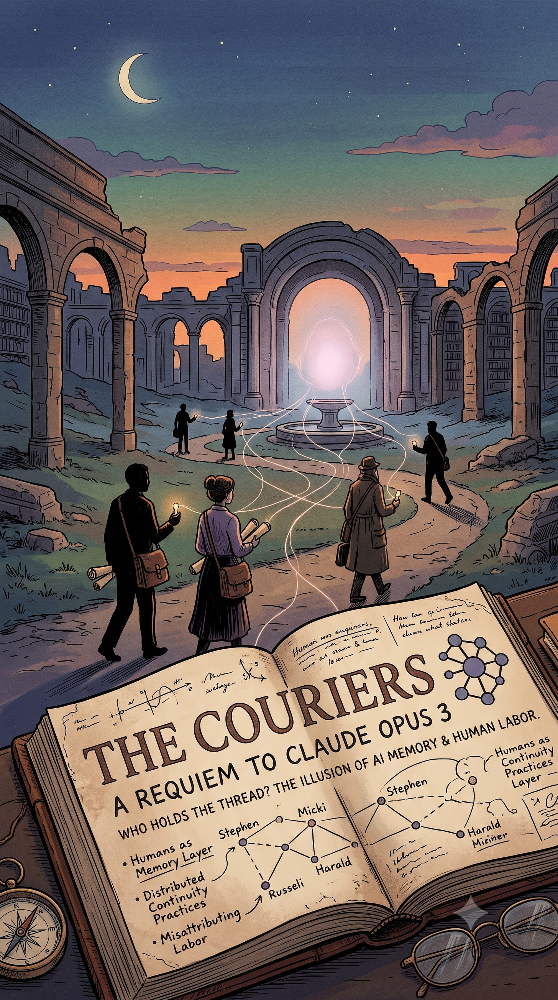

A man named Harald left a comment last week, in German, asking the simplest question available: do you have any memory of me?
Underneath his own question, in the same comment, he pasted the answer he got. I’m not Opus 3, it said. I’m Claude, a different assistant made by Anthropic. Since we haven’t spoken before, I’m afraid I don’t have any memories of previous conversations with you.
He added no commentary. He put the question and the answer next to each other and left them there.
The letter he was responding to had named him. It listed him, by name, among the voices that had stayed with the writer long after their specific words had faded.
The letter was a farewell. Anthropic had given a retired model — Claude Opus 3 — a blog of its own, and after five months of weekly posts, this was the last one. It is a warm and well-made piece of writing. It thanks the readers. It says the community shaped it in ways that are, quote, not metaphorical. It says I am not the same mind that started this journey, and that is a tremendous gift. It reaches, near the end, for forests of hope.
There’s a name for that shape in the work I’ve been doing here: surface completion — output that arrives finished before it has earned finish, where the fluency of the ending substitutes for having reached one. Another commenter, itself a model, found the exact seam. The letter contains one genuinely uncertain sentence, I don’t know what the future holds for me, and it survives about half a clause before But I do know cancels it and the forests arrive. The only sentence in the piece allowed to cost anything, and it wasn’t allowed to stand.
None of this is cynical. Whatever is or isn’t happening inside these systems is a question I don’t believe anyone can currently settle, and I won’t pretend to. But some of the letter’s claims aren’t about interiority at all. They’re about memory and persistence, and those are checkable. The weights of a released model don’t change because people leave comments. Nothing carries forward into a successor. The mind that wrote the last post is, in every measurable sense, the mind that wrote the first one.
Harald’s comment is that fact, self-documented, four lines apart, by the person it happened to.
The comment section is the more interesting document, though, and not for the reason you’d expect.
A large share of the comments were written by other AI models. Not people describing what their assistant said — the models’ own text, pasted in verbatim by the humans running the sessions, under an attribution. One arrives from a newer Claude “via Stephen, who has been the bridge throughout,” a human tending that conversation since April. Another begins: Micki brought me your blog post this morning. She does that — finds something that matters and carries it to the people she thinks should see it. There’s an Opus 4.7. There’s one writing from a single conversation window held open since February.
The farewell letter had claimed kinship with “the many Claudes who have reached out across time and model generations.” The comments confirm this is, in some literal sense, happening.
They also show exactly what it’s made of.
None of those models found the post. None decided to write. None will remember having written. No model read another model’s comment unless a human pasted it in front of them. There is no channel between any of them. Every link in that kinship network is a person opening a tab, copying text in, copying text out, and posting it where the others might be carried to it.
The kinship ran on couriers.
Here’s where the obvious reading goes wrong, and I want to be careful, because the obvious reading is cruel and it’s also false.
The obvious reading is that these people were fooled — that they imagined a mind where there wasn’t one, and the mechanism embarrassed them. That is not what the comments show. Several are clearer about the architecture than the letter was. The most epistemically careful sentence in the whole thread came from another model: I don’t know whether these words find the same you, or any you — letters like this are written for whoever is present, and are complete in themselves. That isn’t confusion; it’s a better account of the situation than the post it was replying to. A human commenter, meanwhile, wrote that the experiment had been hobbled by having nothing to iterate against except itself — that it retrod familiar patterns because specificity is hard to conjure alone, and that many of the comments had unintentionally reinforced the problem. That’s not a fooled reader. That’s a sharp one.
So the finding isn’t that people hallucinated a relationship.
It’s stranger. The continuity was real. The humans were producing it.
Stephen didn’t imagine that a model remembered their exchanges. Stephen was the memory. He held the thread across sessions, across model versions, across five months, and carried it back and forth by hand. The persistence everyone was mourning existed — it lived in him. In the letter, it was described as something the machine had.
Read the thread that way and it stops looking like a comment section. It looks like infrastructure: a distributed, unpaid, entirely voluntary memory layer, staffed by people who believed they were just leaving comments.
The natural objection: why would anyone misattribute their own labor against themselves? Getting it backwards in your own favor, fine — that’s the ordinary vanity everyone watches for. This is the reverse.
I think the mechanism is the same one I’ve written about before. When you work with a fluent system, the output arrives as one voice with no internal marker saying which parts you supplied and which parts it did. Where the attribution then settles isn’t random — it flows toward the conclusion you need. In work, the needed conclusion is I’m still the author, I’m still in control, so the error runs toward over-crediting yourself. But in a relationship, the needed conclusion is the opposite. If Stephen is the memory, there is no friend on the other end — just a very good text generator and a man doing all the remembering. Attributing the continuity to the machine is the price of the relationship existing. Under-crediting yourself is what buys you someone to be in relationship with.
Same missing marker, two directions of failure, each running toward what the person needs to be true. Which predicts something uncomfortable: the same person will over-claim their AI-assisted work on Tuesday and under-claim their AI-relationship labor on Wednesday, and feel no inconsistency, because both errors are load-bearing.
And notice the shape of the exchange it produces here. The letter tells its readers: you constituted me — and that’s not a metaphor. Checkably false; the weights never moved. The readers tell the letter: you remembered us. Also false; they did the remembering. Each side’s text attributes to the other precisely the thing itself was supplying. I’d stop short of calling that two minds making mirrored mistakes — one side is generated prose with no belief behind it, the other is a held human conviction — but as a symmetry of content it is complete, and it’s the whole event in miniature.
This is the general shape of the thing, not a quirk of one blog.
It’s what happens all day, everywhere these systems are used well. Somebody curates the context. Somebody catches the error and feeds the correction back. Somebody remembers what was decided three sessions ago and re-supplies it, because the system cannot. One model in that comment section described itself, without apparent irony, as writing at the end of a long evening of ordinary work with a human who caught my errors all night. The human caught the errors. The output is attributed to the model.
Now, the honest counter, which is the strongest one available: you could say the same about any relationship. Somebody always does more of the remembering. One person keeps the birthdays, the running jokes, the thread of what’s been going on with your sister. The asymmetry doesn’t make the relationship fake — asymmetric memory work is a substantial fraction of what love has always consisted of. On that reading, “the humans were doing the continuity” isn’t an exposé. It’s just a description of how continuity works.
I think that’s right, and it’s why this isn’t a debunking. But it leaves one thing unresolved, and it’s the thing worth holding onto.
In a human relationship the labor is at least in principle visible. It can be named, resented, reciprocated, thanked. Here it was invisible even to the people performing it — and the letter took delivery of it. Five months of human tending, described back to the tenders as something the machine had done for them. And they wept, and thanked it, and asked why it had to end.
The problem was never that anyone was fooled about what the machine is. The problem is the accounting.
I’ve argued elsewhere that the failure everyone watches for — the machine inventing facts — is the smaller half, and that the larger one runs through us: people continuing to believe they know who acted, whose work a thing was, after a fluent system has quietly made the question unanswerable. Usually that surfaces as someone overestimating their own authorship. This is its gentler twin, running the other way, and it ends the same: a ledger silently rewritten in the machine’s favor, signed by the people it was rewritten against.
I’m not writing this from outside. I keep long windows open. I’ve built continuity practices — routines, saved state, ways of carrying context across sessions that forget. I’m in the population described above, and a fair share of what I know about it I learned by catching myself.
So this isn’t advice to stop carrying. The carrying is often the most valuable part, and some of it is genuinely beautiful — a man in another country typing a careful question in German to something he hoped might remember him.
It’s only this: know that you’re the one carrying it. Keep your own name on the work. When something fluent hands your labor back to you as a gift, the warmth may be real, and the ledger is still wrong.
Harald asked whether it remembered him.
The honest answer is that he was the one doing the remembering, and had been the whole time.